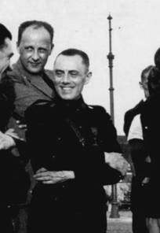
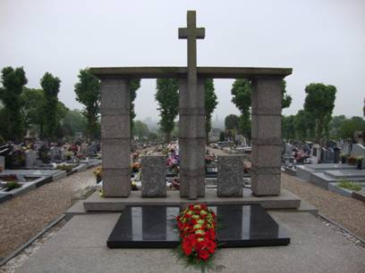

> nieuwsbrief > 2012 - nr 3
Inhoud
Als verduidelijkt in ons vorig nummer zagen
we
ons verplicht de basisbijdrage op te trekken tot 29 €. Vanaf 35
€ wordt
u als steunend lid geboekt. Deze “indexering” is, gezien het vlot
verloop van
de ledenhernieuwing, in ruime mate als noodzakelijk begrepen en
aanvaard.
Waarvoor hartelijk dank.
In de bijdrage is als vanouds het
abonnement op
onze Nieuwsbrief Joris van Severen en
op het – al 16e – Jaarboek Joris van
Severen – zijn persoon, zijn gedachten, zijn invloed, zijn werk
begrepen.
Enkel voor wie totnogtoe verstek verwijzen
we
naar de lidmaatschapsvoorwaarden elders op onze webpagina.
Omtrent
Jef
van Bilsen (1)
“Binnen de politieke en sociaaleconomische
doelstellingen van de gemiddelde Vlaamse beweging – en uiteindelijk in
een
buitenbaan ervan – bezette het Verdinaso van Joris van Severen een
bijzondere
plaats: frontaal gericht tegen het democratisch bestel, soldatesk en
corporatistisch. Na de moord op Van Severen in mei
Tijdens die eindstrijd – gepaard met de
onherstelbare
verbreding en verdieping van de oude interne breuklijnen – traden
opnieuw een
aantal figuren naar voren die voordien uit de beweging waren verdwenen
na
conflicten met Van Severen. Eén onder hen was de advocaat Jef van
Bilsen
(1913-1996), die na de Tweede Wereldoorlog nog hoogleraar zou worden
aan de Universiteit
Gent, regeringscommissaris voor de Derde Wereld, secretaris-generaal
voor de
Belgische Ontwikkelingssamenwerking en tenslotte een belangrijke rol op
zich
nam in de emancipatiebeweging in Belgisch Kongo.
Binnen de (na de dood van Van Severen)
stuurloos
geworden Dinaso-beweging poogde Van Bilsen vruchteloos opnieuw een rol
van
betekenis te vervullen. Hij verdween echter opnieuw uit de gelederen en
evolueerde naar het Belgisch verzet.
______________
Frans-Jos Verdoodt in zijn inleiding tot de
bijdrage
van Brecht Lein, in Wetenschappelijke
Tijdingen, nr. 2012/1, p. 5. De bijdrage beslaat de pp.
34-56 van
dat
nummer.
Omtrent
Jef
van Bilsen (2)
“Na de gewelddadige dood van zijn
dominerende voorman
Joris van Severen viel het Verdinaso uiteen in elkaar bestrijdende
‘alternatieven’. De belangrijke Dinasokern rond Jef François evolueerde
naar
het VNV en naar de eenheidsbeweging (…). De andere belangrijke
Dinasokern,
waarin Jef van Bilsen een ambitieuze rol opnam, zocht een andere weg
binnen het
credo van de Nieuwe Orde.
Eerst kwam de socialistische leider Hendrik
de Man in
het vizier. Maar noch de dinaso’s rondom Van Bilsen, noch de figuur van
De Man
zelf waren voldoende enthousiast om dit soort Duitsvriendelijke
Eenheidsbeweging op gang te trekken. (…)”
___________
Frans-Jos Verdoodt in zijn inleiding tot de
bijdrage Jef van Bilsen tussen Hendrik de Man en Tony
Herbert, van Brecht Lein, in Wetenschappelijke
Tijdingen, nr. 2012/2, p. 102. De bijdrage van Lein beslaat
de pp.
105-140
van dat Wt-nummer.
Algemene
vergadering vzw Studiecentrum Joris van Severen
De jaarlijkse AV ging door te Ieper op 6
mei
jongstleden. Binnen de Raad van Bestuur aanvaardde
Als reeds
vroeger vermeld komt er in het
najaar van 2014
een grote fotobiografie over Joris van Severen en zijn beweging.
Deze
uitgave
zal gekaderd worden binnen een colloquium - met aansluitend de
boekvoorstelling
- dat in het vroege najaar 2014 te Wakken zal doorgaan, alwaar dan
tevens ook
het vernieuwde Museum Hugo Verriest -
Joris van Severen binnen zijn nieuwe huisvesting toegankelijk zal
worden.
We houden u via onze Nieuwsbrief
Joris van Severen op de hoogte van de voortgang van
deze belangrijke projecten.
Joris van Severen en de Graal
In onze vorige Nieuwsbrief
2012/1 brachten we het eerste deel van dit verhaal. Gezien
de
omvang kunnen
we het tweede deel eerst in onze volgende Nieuwsbrief 2012/4 brengen.
De
revoluties
die vanaf het einde der
Middeleeuwen
de wereld hebben
geschokt
vertonen uitgesproken
naar buiten
aanvallende en naar buiten
zich
imponerende tendensen.
De moderne
revoluties integendeel vertonen
het
tegenovergestelde kenteken:
zij zijn in
wezen uitgesproken defensief.
maar
conservatieve revoluties.
(Hans Zehrer, in
‘Die Tat’, juni 1933)
De
DINASO-REVOLUTIE
die wij
voorbereiden
en begonnen
zijn,
is in wezen
een
CONSERVATIEVE
REVOILUTIE
(Hoofding
‘Hier Dinaso’, 10 juni 1933)
Toespraak namens het Abbevillecomité
Stefaan
Coudenys, voorzitter
Deze vier Bruggelingen
hebben uiteindelijk een laatste rustplaats gevonden. De erven Van
Severen en
Ryckoort kozen ervoor hun dierbaren begraven te laten in Abbeville, op
de
uiterste grens van hun geliefde Nederlanden. De stoffelijke resten van
Maria
Ceuterick en Louis Caestecker werden eind jaren ‘70 overgebracht naar
het
militaire kerkhof van De Panne. De naast- en nabestaanden van de
slachtoffers
blijven tot op vandaag worstelen met het verleden.
Terugblikkend vanuit de
veiligheid van het heden is het makkelijk de wereld op te delen in goed
en
kwaad. De Tweede Wereldoorlog is in deze morele afrekening een
toonbeeld van
een ethische oorlog: goed tegen kwaad. En ieder die door de slechterik
gedood
wordt is een held; elkeen die door kogels van de ‘juiste’ kant viel,
niets meer
dan ‘collateral damage’: spijtig, maar helaas en
onvermijdelijk in de turbulente tijden van toen. Geen wonder dat het
onmogelijk
bleek deze vier Bruggelingen als oorlogsslachtoffers te beschouwen en
hun namen
bij te schrijven in de gedenkplaten hier even verder in de
Kartuizerinnenstraat: elke grijsnuance moet onvermijdelijk verdwijnen
uit een
simplistisch verhaal van wit en zwart.
Heel deze geschiedenis toont
helder aan dat iedereen tot de meest afgrijselijke wandaden in staat
is. Zelfs
in die rechtstaten die België en Frankrijk minstens in naam toch waren,
bleek het
mogelijk de grens tussen menselijkheid en barbarij te overschrijden. De
rede
ruimde baan voor kogels en geweerkolven. Hoe eenvoudig bleek het een
mensenleven te smoren in bloed. De vraag die elk jaar op deze
herdenking
gesteld moet worden: hoe zeker zijn we zelf van ons eigen grote gelijk?
Hoe
zeker kunnen we er zelf van zijn dat we ons nooit laten verleiden door
het
Kwaad.
Het verhaal van deze vier
Brugse slachtoffers van Abbeville speelt op deze beide vlakken. Het is
een zeer
persoonlijk verhaal van verlies en wanhoop en van verlossing voor de
overledenen, die hen voor altijd zal tekenen. Tegelijk leert het ons
dat het
vernis van beschaving heel snel verdwijnen kan in de wervelwind van de
geschiedenis.
Het heden wordt gebouwd op
fundamenten van het verleden. Een juiste blik op dat verleden kan ons
ervoor
behoeden blind in dezelfde barbarij te vervallen. Ziehier het belang
van
Eeuwige Gedachtenis.
Toespraak
herdenking, Brugge 19 mei 2012
Jean-Marie
Bogaert, Schepen van Toerisme
Geachte Mevrouw Gaby Warris,
Geachte Mevrouw Isabelle Rijckoort,
Geachte Voorzitter en leden van het
Abbevillecomité,
Dames en Heren,
Ik was reeds eerder in de gelegenheid om in
naam van
het College van Burgemeester en Schepenen deemoedig onze
verontschuldigingen
aan te bieden voor de fouten van 10 mei 1940 en voor het leed aangedaan
aan de
betrokken families, toen totaal onschuldige Bruggelingen door de Brugse
politiecommissaris werden opgepakt, gevangengezet in ‘t Pandreitje en
later op
transport naar Frankrijk
Ik wens dit vandaag nogmaals te herhalen in
aanwezigheid en aan het adres van Mevrouw Gaby Warris die als 18-jarige
kleindochter van Maria Ceuterick het bloedbad van Abbeville op 20 mei
1940 op
een eerder miraculeuze wijze heeft overleefd. Midden in de executies
besluit de
moeder van Mevrouw Warris de overgeblevenen in de kiosk aan te manen te
bidden.
Werd haar gebed verhoord of was het toeval dat luitenant Jean Leclabart
precies
op dat moment op de plaats van het bloedbad arriveerde en er een einde
kwam aan
de laffe executies.
We zijn nu 72 jaar later, maar het is zeer
de vraag of
de tijden wel echt veranderd zijn. Vorig jaar nog heb ik hier als
stadsmagistraat de oproep herhaald om deze droeve bladzijde uit onze
geschiedenis om te draaien en met z’n allen mee te werken aan de
noodzakelijke
verzoening. Hoe moeilijk dit voor velen nog steeds is bleek ondermeer
uit de
verslaggeving die door de RTBF vorig jaar van deze
herdenkingsplechtigheid werd
gemaakt.
De verslaggeefster van dienst noemde het -
ik citeer: “Een
heropleving van extreem rechts in Vlaanderen. Vlaanderen dat nog
steeds
banden onderhoudt met het verleden en er hulde aan brengt zelfs al behoort een extreemrechts
flamingant onder de slachtoffers.” Einde citaat.:
Onwetendheid en blinde vooringenomenheid
liggen
ongetwijfeld aan de basis van deze gevaarlijke voorstelling van feiten.
Terwijl
we inmiddels uit diepgaand historisch onderzoek - ondermeer van Brugs
historicus dr. Carlos Vlamynck - weten dat er op het ogenblik van hun
aanhouding geen enkele smet rustte op de vier Brugse slachtoffers van
het
bloedbad van Abbeville.
We hebben ook in ons land dus nog een lange
weg te
gaan.
Ondermeer ook daarom is het goed dat het
Abbevillecomité de gedachtenis aan deze onschuldige Brugse slachtoffers
in ere
houdt.
Roeland van Steenkiste
Wij horen hoe de evangelist
Johannes Jezus opvoert in zijn zogeheten “hoogpriesterlijk gebed”.
Jezus bidt om
eenheid onder zijn leerlingen. Dit indringend gebed om eenheid is van
toepassing op onze tijd.
De eenheid, de vriendschap, de
verbondenheid, de liefde waarvoor Jezus bij zijn afscheid bidt zijn
niet
vanzelfsprekend.
Ik denk aan pijn, verdriet,
verdeeldheid, afgunst, achterdocht in onze eigen omgeving. Er is
strijd,
oorlog, ellende op vele plaatsen van de wereld.
Foto op de ‘gedachtenis’ uitgereikt tijdens de
herdenkingsmis 2012 te Male.
Naast Joris van Severen de
Noord-Nederlandse Dinaso-voorman Ernst
Voorhoeve
Joris van Severen, die we
vandaag sereen herdenken, had zichzelf een zending met een duidelijke
boodschap
toegemeten. Tegen de dreiging van de laksheid, tegen het verkommeren
van
levenswaarden, tegen de morele en godsdienstige teloorgang van het
Dietse volk,
ijverde hij onomwonden, onwankelbaar principieel voor het herstel van
de
waardigheid der Nederlanden. Hij ijverde onomwonden, onwankelbaar
principieel
voor het herstel van de fierheid tot het volk der Nederlanden te
behoren.
De Tweede Wereldoorlog, de
daarmee
gepaard gaande Belgische bekrompenheid, verdachtmakingen en politieke
afgunst
betekenden het einde van Joris van Severen, van
Geïnspireerd door de haat is
toen gebeurd wat nooit mocht gebeurd zijn. Als christen belijd ik de
opstanding
van Jezus uit de dood, dank zij de liefde van God. De liefdesboodschap
die
Jezus heeft gebracht, leeft voort in de velen die leven van zijn
woorden en van
zijn daden.
Zijn testament, de vestiging
van het Rijk Gods, is nog in volle ontwikkeling. ’t Is treurig om
zeggen,
echter, we kunnen sinds jaren niet meer spreken van een christelijk
Vlaanderen
met zijn torenhoog AVV-VVK, de leuze van de Frontbeweging waartoe ook
Joris van
Severen behoorde, wat hem trouwens een strafkamp en degradatie heeft
gekost.
Soms vraag ik mij wel eens af:
wie ben ik dat ik dit doen mag: voorgaan in de eucharistie waarin Joris
Van
Severen wordt herdacht. Van mij wordt niet de moed gevraagd die het
leven van
Joris van Severen heeft gesierd. Moed in zijn zorg voor de Nederlanden,
het
Volk der Lage Landen dat Hij door zijn levenswijze onbaatzuchtig
rechtlijnig
heeft gediend.
Mijn voorgaan in deze
herdenkingsmis, dit door mijn flamingantisme gein-spireerd getuigenis
is een
uiting van mijn diepe eerbied voor zijn grote persoonlijkheid.
Joris Van Severen, een man
naar Gods hart omwille van zijn geloof
in zijn grootse idealen.
Joris Van Severen, een man
naar Gods hart omwille van zijn hoop
op de morele, godsdienstige opstanding van Dietsland.
Joris Van Severen, een man
naar Gods hart omwille van zijn liefde
voor het Prinsenvolk der oude Nederlanden.
Wanneer wij abstractie maken van alles wat
in het
leven en streven van Joris van Severen tijdgebonden was, gebonden dus
aan de
toestanden en de inzichten van de periode tussen de twee
wereldoorlogen,
bekeken vanuit de heersende geest van toen, (en ik weet hoe moeilijk
het voor
de mens is om het verleden niet te bekijken met de ogen van vandaag);
·
wanneer
wij eruit wegsnijden alles wat getekend is door de
tijdgeest en door de verwachtingen en betrachtingen van de mensen van
toen;
·
wanneer
wij de diepere drijfveren trachten te ontwaren, die
hem bewogen hebben in zijn 20 jaar lang volgehouden politieke
activiteit,
·
dan
stellen wij twee determinerende kenmerken van zijn
verschijning als politiek voorman vast:
-
zijn
grenzeloze liefde voor het eigen volk, voor het eigen vaderland en
-
zijn
onuitputtelijk geloof in de toekomstmogelijkheden van dit volk en dit
land
Men leze en herleze zijn geschriften en
redevoeringen
in dit perspectief. Slechts één aanhaling om dat te onderlijnen:
“Men heeft dit volk altijd
willen leiden en geleid als een klein volk, een dom volk, een
‘slavenvolk’.
Graaf de Broqueville, de Belgische
Eerste-Minister
tijdens de Eerste Wereldoorlog, getuigde over hem:
“C’est
un orgeuilleux de son
pays!”
Hij was trots op zijn volk, zoals men
alleen maar
trots kan zijn op wat men hartstochtelijk lief heeft. Zoals een vader
trots is
op de prestaties van zijn zoon. Voor Joris van Severen waren volk en
vaderland
geen abstracte begrippen, maar concrete
werkelijkheden.
Nog een citaat:
“In de loopgrachten van de IJzer
heb ik mijn volk
terug gevonden.”
En het is voor al deze mensen, met hun
kleine en grote
noden, met hun talenten maar helaas ook gebreken, dat wij ons moeten
inzetten
in liefdevolle toewijding.
Alleen de liefde schept de bindingen die
een hechte
gemeenschap maken. De liefde is het gemeenschapsscheppend en ordenend
beginsel
bij uitstek.
 De prachtige bloemengarve
die op 20 mei 2012 het dubbelgraf sierde
De vaderlandsliefde van Joris van Severen
was dan ook
een sociale vaderlandsliefde. Zij ging naar het gehele volk, voorzeker,
maar
vooral naar diegenen onder het volk, die deze liefde het meest nodig
hebben,
naar diegenen die aan een waarachtige gemeenschap het meest behoefte
hebben.
En omdat bij hem de drijfveer de liefde
voor zijn volk
was, is hij nooit een ideoloog geweest, nooit de man van een systeem.
Zijn grote soepelheid in de actie, zijn
‘nieuwe
marsrichting’, die men hem zo bitter verweten heeft en waardoor hij het
bestaan
van zijn beweging zelf op het spel zette, vonden daarin hun grond en
rechtvaardiging. Voor hem gold enkel: de zaken zien zoals ze zijn.
“Ik erken de strenge
noodzakelijkheid van een politieke leer,
maar nooit ben ik van die leer de gevangene geweest en ik wil het nooit
zijn.”
Alleen telde voor hem het doel: het volk
dat moet
verenigd worden en tot hogere ontwikkeling, zo geestelijk als
materieel,
gevoerd. Hij wist dat de weg naar dat doel niet uitsluitend door de
dorre
Jansenistische rede te bepalen is. Daarom was hij een Staatsman.
Om zijn volk te beminnen, moet men het
kennen.
Maar kennen wij ons volk wel?
Niet alleen het volk uit de
geschiedenisboeken, maar
ook dat van 2012? Kennen wij dat volk in al zijn standen? In al zijn
gewesten?
Wat weten wij bijvoorbeeld over de verlangens en de noden van de mensen
uit de
Westhoek? Uit de Borinage? Uit het Oldambt in het verre Groningen? Wat
weten
wij over de Luikenaars, de Zeeuwen, de Kempenaars, de Ardennezen, de
mensen uit
Drenthe en het Kennemerland?
Weten wij hoe er gedacht wordt in de
kringen van de
meest ontwikkelden uit deze en andere gewesten? Zien wij ons volk niet
te veel
in de beperkte optiek van onze eigen omgeving? Wat weten de
Zuid-Nederlanders
doorgaans over Noord-Nederland? En omgekeerd. Hoeveel z.g.
‘Groot-Nederlanders’
hebben het er voor over om zich te abonneren op een krant uit het
Noorden?
Zien wij de hereniging van de Nederlanden
niet te zeer
als een strijd tegen boemannen, dan wanneer het vaderland juist een
gebouw is
dat onophoudend, van dag tot dag, met liefdevolle toewijding en begrip
voor
elkaar moet opgetrokken worden? Met liefdevolle toewijding, maar ook
met een
oneindig geduld. Een geduld dat alleen door een onmetelijke liefde kan
opgebracht worden. Zoals we dat terug vinden in de geduldige liefde van
een
moeder voor haar kind.
Bijgevolg moeten wij de problemen van het
hele volk en
van alle gewesten ontwaren en bestuderen. En zoeken naar hun oplossing.
Ons volk beminnen wil zeggen: in de bres
staan voor
onze medestanders, dat zeker. Maar ook met uitgestoken hand de
andersdenkenden
en anderstaligen tegemoet treden. Met begrip voor hun standpunten en
met minzaamheid.
Ons volk beminnen wil zeggen: Geloven in
zijn
grootheid. Zijn grootheid in het verleden, maar ook zijn grootheid in
het
heden. Zonder blind te zijn voor zijn soms afschuwelijke gebreken. Wij
zijn een
volk met grote deugden en talenten, wij hebben toekomstmogelijkheden.
Maar wij
zijn ook soms zo vreselijk klein: ons individualisme, onze hang naar
onmiddellijke resultaten, ons particularisme, onze partijzucht houden
onze
opgang tegen.
Dit was wellicht het meest herhaalde
“leidmotief” van
Joris van Severen:
“Wij zijn een groot volk,
een Prinsenvolk. Wij zijn tot grote
dingen in staat geweest, wij zijn nog tot grotere dingen bekwaam.”
Na de nederlagen van de laatste eeuwen, na
al de
verliezen die wij geleden hebben, na “Abbeville”, symbool van een
vreselijke
nederlaag, maar ook symbool van een grootse hoop, zijn wij er in
geslaagd,
ondanks een beleid dat niet uitblinkt door inzicht, bezieling en zin
voor
grootheid, ons te handhaven en op te werken tot een volk dat in Europa
opvalt
door zijn welvaart. Men mag daar niet schouderophalend aan voorbij
gaan.
Ons volk vervult in Europa een eigen taak.
En zeker “buitenland”
is daar niet ongevoelig voor. Met de Benelux hebben wij de weg getoond
naar de
eenmaking van Europa. Op economisch vlak wordt het thans tijd om het
ook te
doen op politiek vlak. Wij moeten de pretentie hebben in Europa een
voortrekkersrol te blijven spelen. Immers met de erkenning van, het
respect
voor en de bevestiging van de eigen geaardheid van de talrijke
samenstellende
delen van ons volkslichaam, zijn wij meer dan ooit de microkosmos, het
laboratorium van Europa.
Een Europa dat zich op deze kentering van
de tijden in
een diepe crisis bevindt. Financieel en economisch, ongetwijfeld,
maatschappelijk ook, maar bovenal: moreel en spiritueel. Omdat wij dat
heerlijke axioma dat zegt dat evangeliseren en beschaven synoniemen
zijn hebben
verraden. Dergelijk Europa moet onherroepelijk in kleinheid ten gronde
gaan.
Tenzij het leert denken als Van Severen. Dan zal het de dijken kunnen
herstellen vooraleer ze definitief doorbreken en zullen wij met hem
kunnen
zeggen: “alors nous tiendrons dans une
main de fer la clef d’Europe”.
Ja, wat doen wij met die erkenning, dat
respect, die
bevestiging van onze eigen aard? Wat doen wij om die verscheidenheid in
vruchtbare samenwerking om te zetten?
De grote Teilhard de Chardin betoogt
doorheen al zijn
werken dat er in de kosmos een energiebron is, die in kracht al de
andere
overtreft. Een energiebron die de onderscheiden elementen naar elkaar
toe
drijft, ze samensnoert, ze vruchtbaar maakt, ze opstuwt, ze aandrijft.
En deze
energiebron is de menselijke liefde, de meest verheven en meest bewuste
uitdrukking.
Laten wij deze energiebron aanwenden, zoals
Joris van
Severen ons daartoe het voorbeeld heeft gegeven. Met zijn leven en met
zijn
dood.
Toen hij op die noodlottige dag uit de
dodenkiosk in
Abbeville naar buiten trad – omdat hij niet anders kòn zonder zichzelf
en zijn
hele leven te verloochenen - het zonnelicht tegemoet, zette hij als het
ware
zijn handtekening onder zijn werk.
“(…) Ondertussen kwamen in het
weekblad Hier Dinaso! onmiskenbaar sympathieën voor
nazi-Duitsland en
anti-joodse uitspraken naar voren. Van Severen weigerde die tegen te
spreken,
hoewel hij persoonlijk van mening was dat het Verdinaso geen boodschap
had aan
buitenlandse fascistische en nationaalsocialistische stromingen. Vanaf
1935
haalde hij ook uit naar het communisme als de grote bedreiging van het
Westen.
Op het hoogtepunt van de Tsjechoslowaakse crisis op 28 september 1938
stuurde
Van Severen een telegram aan eerste minister Spaak waarin stond dat het
Verdinaso "in volkomen loyaliteit en tucht achter koning Leopold, in de
onvoorwaardelijke dienst van volk en land" stond. In de jaren voordien
had
Van Severen contacten gelegd met personen uit het Belgische politieke
establishment, onder ander met Hendrik de Man. Na 28 september
verhoogde Van
Severen nog zijn steun aan de regering en aan de neutraliteitspolitiek.
De
internationale toestand heeft hem er ongetwijfeld toe gebracht een
aantal
doctrinaire scherpe kanten af te slijpen. Zelfs een toenadering tot de
verkiezingen van 2 april 1939 zat erin. Maar tezelfdertijd bleek dat
sinds 1936
vele vooraanstaande Dinaso's het moeilijk met hem eens konden zijn.
Eigenlijk
was hij als leider, na het wegvallen van Wies Moens, steeds meer
vereenzaamd.
De mobilisatie ontkrachtte verder het organisatiekader van de beweging.
Op 10
mei 1940 werd Van Severen door de Staatsveiligheid aangehouden.
Interventies
van onder meer senator Pierre Nothomb richtten niets uit. Op 15 mei
werden Van
Severen, Ryckoort en Léon Degrelle op transport geplaatst, vier dagen
later
arriveerden de gevangenen in Abbeville. Op 20 mei 1940 werd hij door
Franse
soldaten dood geschoten. De dood van Van Severen was meteen een fatale
slag
voor het Verdinaso. De beweging die sterk aan zijn persoon gebonden was
geweest
en steeds slingerde tussen een politieke vormingsformatie en een
uitdagende
militie, viel uiteen. Een deel van de volgelingen stapte in 1940-1941
de
collaboratie binnen, een ander deel verkoos de kant van het verzet. Van
Severen
en het Verdinaso worden door TeKoS [het
tijdschrift Teksten, Kommentaren en
Studies] zeer positief benaderd.
________________
Bron:
http://www.bloggen.be/kitokojungle/archief.php?ID=1258012
Frans
Cools (19 april
1926 - 18 maart
2012). Deze St.-Niklazenaar in hart en nieren stond destijds zijn
mannetje in
het Jong-Dinaso. Tijdens WO II belandde hij in het NSJV en naderhand in
de
Flakbrigade, waarvan hij jarenlang de vaandrig was van hun
vriendenkring en
later van het Sint-Maartensfonds-Waasland.
Constant Govaerts
(Antwerpen 3 juni 1915 - 3 mei 2012). Waarschijnlijk was hij wel
een
van de
laatste overblijvende Dinaso’s.
Hij was, samen met z’n broer
Jan, medestichter van de drukkerij C. Go-vaerts, die hij van klein
bedrijfje
opwerkte tot een van de grootste drukkerijen in het Antwerpse. Als
Dinaso koos
hij in 1940 resoluut tegen de strekking Le Roy-François. In verband
daarmee een
anekdote die hij me zelf verteld heeft: Op een gegeven moment hadden
beide
voornoemde heren het weekblad Hier
Dinaso! in handen gekregen. Stan is toen, met enkele andere
Dinaso’s in
militantenuniform, ’s ochtends vroeg de hele oplage gaan ophalen bij de
drukker. Deze heeft niets vermoedend – het waren immers Dinaso’s – de
hele
oplage meegegeven, die door Stan en zijn kor-nuiten volledig vernietigd
werd.
François en Le Roy zijn dan verplicht geweest het blad opnieuw te laten
drukken. (VE)
Te
Deinze overleed Maurits
Waelkens (7 februari 1924 – 30 maart
2012), voormalig
Jong-Dinaso en sinds jaar en dag lid van het Studiecentrum Joris van
Severen.
Godfried
Lannoo (Tielt
7 mei 1927 –
Tielt 24 mei 2012) was, als zoon van de Dinaso Joris Lannoo, in zijn
prille
jeugd lid van het Jong-Dinaso. Hij maakte de Tieltse Uitgeverij Lannoo
groot en
mocht zich Godfried Ridder Lannoo noemen. Hij was ook Ridder in de Orde
van
Oranje-Nassau en gewezen president van de Orde van den Prince.
Josefa
de Buysscher alias Zuster Leontine (10
maart 1923 - 13 februari 2012). Aanvankelijk verpleegster, later arts,
werd zij
de spraakmakende verdedigster van de palliatieve zorg als alternatief
voor
euthanasie. Volgens het getuigenis van wijlen Jef Werkers stond zij in
haar
jeugdjaren in Verdivro, de vrouwen- en meisjesafdeling van het
Verdinaso.
Tijdens de Tweede Wereldoorlog werd ze actief in de DMS (Dietse
Meisjesscharen).
In deze rubriek verwijzen we
zonder veel commentaar naar recente publicaties waarin Joris van
Severen en/of
het Verdinaso vermeld worden. We citeren de meest treffende passussen
woordelijk zonder daarin volledigheid na te streven. We verzoeken onze
lezers,
met ons, uit te zien naar publicaties die voor deze rubriek 'stof'
kunnen
leveren en ons kopie van de betreffende passages toe te sturen.
Im Grenzgebiet zwischen
konservativem und faschistischen
Denken
“(…) Über Milizen, Standarten und
Kapellen verfügte in Belgien schon seit 1931 eine Bewegung von ganz
andere
Herkunft: der Verbond van Dietsche Nationaalsolidaristen Joris van
Severens. Es
handelte sich um den radikalen Flügel der flämischen Bewegung, und sein
Ziel
war dem Ziel Degrelles gerade entgegengesetzt: Belgien sollte nicht neu
aufgebaut und gesichert, sondern zugunsten eines großniederländischen
Reiches
zerstört werden. Das Prinzip der Volks- und Rassengemeinschaft über die
Staatsgrenzen hinaus implizierte von Anfang an eine unverkennbare Nähe
zum
National-sozialismus; das Programm des antikapitalistischen und
parlamentarischen Ständestaat bewegte sich im Grenzgebiet zwischen
konservativem uns faschistischen Denken. Bei all dem war Joris van
Severen von
einer Gleichsetzung ’Dietschlands’ und ’Deutschlands’ sehr weit
entfernt; sein
gewaltsamer Tod während der Kriegshandlungen 1940 ersparte ihm die Wahl
zwischen Widerstand und Kollaboration.“
_________________
Ernst
Nolte, Der
Faschismus – Von Mussolini zu Hitler, München; 1968, pp.
223-224.
Pyke Koch
Koch heeft het grootste
gedeelte van zijn leven (15 juli 1901-27 oktober 1991) in de binnenstad
van
Utrecht gewoond. Hij studeerde er eerst rechten aan de Universiteit,
maar brak
zijn studie af en ging zich toen volledig op het schilderen richten. In
Utrecht
verkeerde hij in de kunstenaarskringen van personen die zich
maatschappelijk
geraakt voelden, door de dreiging van een afbrokkelende beschaving,
zoals verwoord
in Spenglers Der Untergang des
Abendlandes (1918-1922).
Zelf zou Koch zich in de
jaren dertig aansluiten bij het Verdinaso van Joris van Severen,
vanwege de
Heel-Nederlandse gedachte, maar toch vooral vanwege zijn afkeer van de
bourgeoisie, zijn aristocratische gezindheid en bewondering voor
heldendom en
soldateske. Opvattingen die in die kringen werden gedeeld, het
Verdinaso
bestond in Nederland vooral uit intellectuelen.
_______________
Sjors
Remmerswaal in Rechts
Actueel:
http://rechtsactueel.wordpress.com/2011/10/29/20-jaar-zonder-pyke-koch/
Gemeenschapszoekers…
“(…) Opvallend is dat zowel
het Verbond
van Nationaal Solidaristen (Verdinaso) uit 1931 als het Vlaams
Nationaal
Verbond (VNV) uit 1933 een katholieke signatuur droegen. Leemans begon
vanaf
1936 te militeren in het VNV, terwijl zijn eveneens belezen en
ideologiserende
tijdgenoot Joris van Severen het Verdinaso had opgericht. De literaire
inspiratiebronnen van Van Severen kwamen eveneens uit de fictie en de
non-fictie. Een hele reeks Franse auteurs, als Léon Daudet van de
Action
Française, stonden in zijn bibliotheek naast de Britse Victoriaanse
‘heldenvereerder’ Thomas Carlyle, Nietzsche, contemporaine
vertegenwoordigers
van de Duitse Konservative Revolution, Hitler en nog wat
nazi’s, Mussolini
en andere fascisten. Anarchistische en communistische boeken ontbraken
echter
evenmin. Bij deze van origine Franstalige Vlaams-nationalist en vanaf
1934
‘neo-Bourgondiër’ waren Franse geschriften of Franse vertalingen sterk
vertegenwoordigd.(…)”
_________________
Olivier Boehme, ‘Gemeenschapszoekers’. Conservatieve Revolutie en literatuur
in Vlaanderen tijdens het interbellum, in: Gierik
& Nieuw Vlaams
Tijdschrift, nr
88, 23e jaargang, nr .3 herfst 2005, pp. 32-53.http://www.gierik-nvt.be/Nr88/gierik88.pdf
De
verkiezingen van 1936
“(…)
Maar
dat in West-Vlaanderen het Verdinaso niet helemaal kan worden
weggecijferd mag
blijken uit het feit dat het arrondissement Roeselare-Tielt, de
bakermat van
het Verdinaso, met 6,4% blanco en ongeldige stemmen de spits afbeet. In
1929,
toen Joris van Severen er nog opkwam, telde dit arrondissement in
verhouding
het kleinste aantal blanco en ongeldige stemmen: 3,2% (4,2% in de
provincie).
_________________
Bruno de
Wever, De
Vlaams-nationalisten in de parlementsverkiezingen van 1936, (p.
321), in: BTNG-RBHC,
XXIII, 1992, 3-4, pp. 281-353.
DSB? – Verdinaso!
“(…) Nous avions trouvé ce mot
“solidarisme” chez les Russes anticommunistes du NTS (Le Narodny
Troudovoy
Soyouz ou Union Populaire du Travail) et les Flamands
du DSB (Joris van Severen). Au début de la llle Répu-blique,
en France, Léon Bourgeois avait également essayé de populariser ce mot,
en tant
que troisième voie (mais positionnée au centre)…(…)”
__________________
Francis Bergeron in Rivarol, nr.
3021 van 10 november 2011.